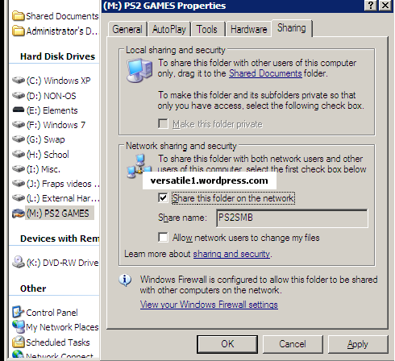

File sharing – Windows XP¶
Enable file sharing :
Simple File Sharing is on by default , so most likely you have SMB enabled, but if you don’t or don’t wish to enable it, you can enable the Guest Account to connect to the SMB share.
1. Ensure that Simple File Sharing is enabled (it should be on by
default). To check do this : [My computer > Tools > Folder Options >
View tab]. Scroll down in the window and make sure that “Use Simple
File Sharing (Recommended)” is ticked. Press OK.
Note : WinXP Home doesn’t have this option as it is ON by default and
can not be turned OFF.
Setting a Sharename :
2. Right click on the folder you want to share (or Partition drive), and go to “Sharing and Security” (sharing a drive will prompt a warning first about the risks of sharing it over a network).
3. In Network Sharing and Security, place a mark in the box for “Share this folder on the network”, then give the “Share Name” the name PS2SMB (default name) – or any name you want, but it must match into OPL network configuration.
